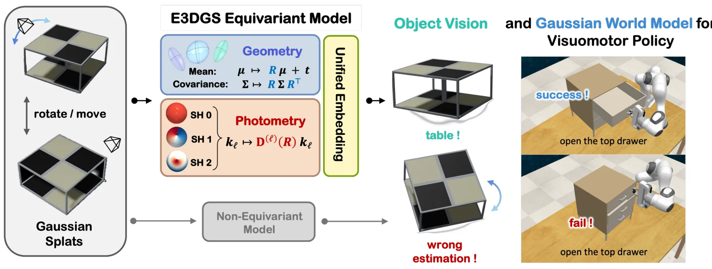
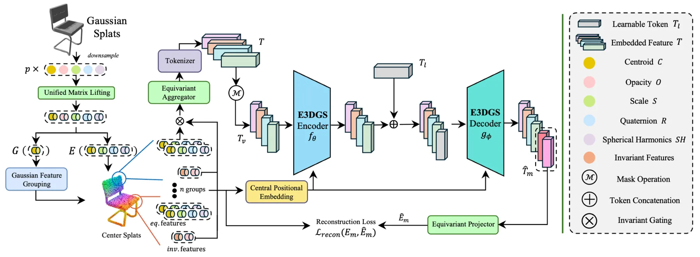

E3DGS：通过颜色即几何嵌入统一 3D Gaussian Splatting 的几何—光度等变性E3DGS: Unified Geometric-Photometric Equivariance for 3D Gaussian Splatting via Color-as-Geometry Embedding
从表示论上解决 3DGS 几何与光度属性旋转作用不统一的问题，对跨坐标系地图学习有基础价值；但主要验证集中于物体视觉和世界模型，尚非完整 SLAM 系统。
一句话工作总结
把低阶球谐颜色精确映射为几何矩阵，与位置和协方差统一进行 SE(3) 等变处理。
摘要
3D Gaussian Splatting 同时包含位置、协方差等显式几何属性，以及由球谐函数表示的视角相关光度属性，但旋转对这些属性的作用形式不同，阻碍了严格的 SE(3) 等变建模。本文证明，对不高于二阶的球谐系数，Wigner-D 作用可精确改写为 3×3 矩阵的共轭作用，从而把几何与颜色统一提升到 gl(3) 载体空间。基于这一“颜色即几何”表述，E3DGS 无需 Clebsch–Gordan 张量积即可处理 3D Gaussian，并在物体视觉和动作条件 Gaussian 世界模型中提高了相机坐标系变化下的鲁棒性与数据效率。
3D Gaussian Splatting (3DGS) captures scenes by coupling explicit geometry (position, covariance) with view-dependent photometry (Spherical Harmonics). However, building $\mathrm{SE}(3)$-equivariant architectures on these primitives presents a fundamental representation bottleneck. Color has been treated as a signal rather than a geometric entity, making it nontrivial to unify symmetry across geometry and appearance as the camera frame changes. While translations are handled by relative coordinates, rotations act heterogeneously across attributes: $μ\mapsto Rμ$, $Σ\mapsto RΣR^\top$, and $f_\ell\mapsto D^\ell(R)f_\ell$. This mismatch complicates strict equivariance, leading existing methods to either discard or flatten SH coefficients, thereby breaking symmetry. We propose a unified solution rooted in representation theory: for SH degrees $\ell\le2$, photometry is algebraically isomorphic to a rank-2 geometric tensor. We prove that the Wigner-$D$ action on these SH coefficients can be exactly reformulated as the conjugation action on $3\times3$ matrices. Leveraging this, we introduce the Unified Matrix Embedding, a lifting that maps all Gaussian attributes into a unified carrier space, $\mathfrak{gl}(3)$. Building on the "Color-as-Geometry" formulation, we present E3DGS, a rigid-body ($\mathrm{SE}(3)$) equivariant architecture that processes 3D Gaussians without Clebsch-Gordan tensor products. Evaluations on object vision and action-conditioned Gaussian world modeling demonstrate that our unified approach yields strong robustness under camera-frame changes and improved data efficiency.
中文解读摘录
- 链接：arXiv 2607.15536
- 核心贡献：证明低阶球谐颜色可精确表示为秩二几何张量，并把位置、协方差与光度统一嵌入
gl(3)，无需 Clebsch–Gordan 张量积即可构建 SE(3) 等变 Gaussian 网络。 - 为什么重要：相机坐标系变化不应改变地图语义；严格等变表示可能提高跨视角泛化与数据效率。
- 待核查：当前是表示学习架构而非 SLAM 系统，需观察其对配准、地图融合和位姿估计的实际收益。
图表/页面预览
{kind=link}

{kind=link}
